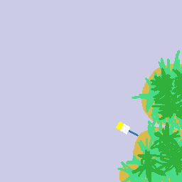
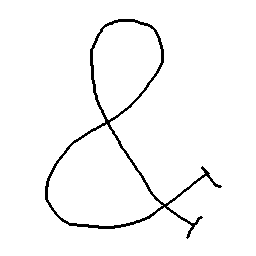

Ok, so there's this weird shape, yeah? Who uses this thing? It's called the ampersand, and I really can't be bothered to look up anything about its history or development, so I'll just talk about what I know about it, and brag about how easy it is to draw, so that you can be like, that guy knows what he's talking about and feels good about himself for it! I'm gonna draw ampersands too. So that's what you're thinking, and I think it's a great line of thought to be thinking.
&
That's basically what it looks like. It's reasonable to be all, "But that is a weird shape I'm never going to remember!" That's fine but you gotta believe in yourself. Look at THIS shape you somehow remember:
%
That one is nuts. But you can write it, right? If not, that is okay. That's the percent symbol, and we will tackle that in the future. My whole point is, you can probably already recognize an ampersand. The step from recognition to recall is intimidating but very possible, and the step from there to recreation is only a small hop in comparison. Oftentimes it is easier to go in the opposite direction — in what I call the Dual Front method of remembering the shape of an ampersand.
In this way, we take advantage of the close relationship between mind and body. We do not need to attempt the difficult task of visualizing an ampersand and copying it to the page, when our muscle memory can completely bypass the task with a little training. In this way, the ampersand eyes/mind/hand heuristic is summarized by "recall ampersand -> visualize ampersand <- draw ampersand", replacing the intuitive but ultimately inefficient "recall ampersand -> visualize ampersand -> draw ampersand" procedure. Here, one's natural affection for ducks is taken advantage of for life gain.
First, imagine a duck swimming in the shape of an ambersand, but instead, you don't have to, because I've got it right here for you:
Hee! Look at the duck (it's an overhead view of the duck swimming). It's tracing the shape in the water. Now just memorize how the duck moves. Trace it with your finger, or with the movement of your eye. Don't think about learning how to draw the ampersand. Just follow the flovely duck. Ok. Have you traced the duck's movements many times? Now you are ready to begin doing it yourself. Click here to try drawing an ampersand yourself. Don't forget about the duck!
How are you feeling about that? The ampersand is used as a shorthand for the word "and," and sometimes it is used for other reasons. Take a look at these salutations written on the inside of a greeting card.
No contest. The ampersand wins every time. Everyone will be impressed by your ability to draw the character, and they'll all think, "Wow, they really don't have the time to write out the word `and', but they DO have the time to write me a compassionate greeting card for my anniversary, because that's just how important I am to them. My friends Sally and Lucy are really quite amazing." YOU can now feel the glamour of being a Sally or a Lucy.
If you're still feeling a bit lost, just remember that the ampersand looks kind of like a duck. Just remember the shape of your favorite duck and you're golden!
